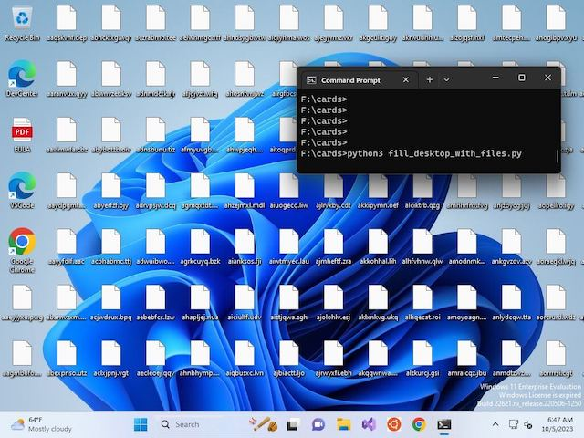
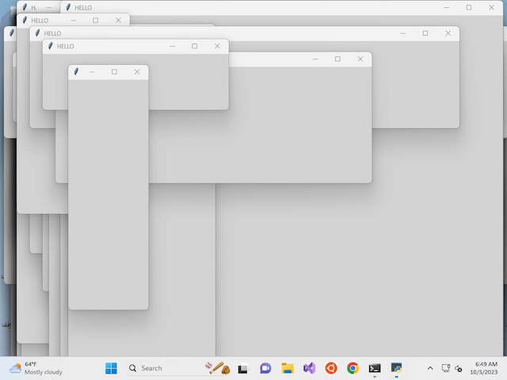
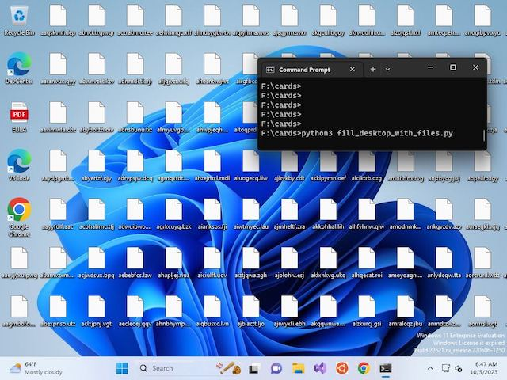
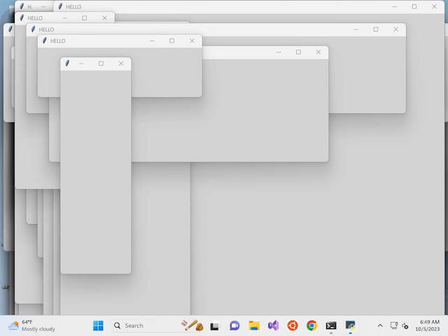

WARNING:
Only use the programs on your own computer. Do not annoy other
people. Those programs are for educational use only! Use them at your own risk.
THE SOFTWARE IS PROVIDED “AS IS”,
WITHOUT WARRANTY OF ANY KIND, EXPRESS OR
IMPLIED, INCLUDING BUT NOT LIMITED TO
THE WARRANTIES OF MERCHANTABILITY,
FITNESS FOR A PARTICULAR PURPOSE AND
NONINFRINGEMENT. IN NO EVENT SHALL THE
AUTHORS OR COPYRIGHT HOLDERS BE LIABLE
FOR ANY CLAIM, DAMAGES OR OTHER
LIABILITY, WHETHER IN AN ACTION OF
CONTRACT, TORT OR OTHERWISE, ARISING
FROM, OUT OF OR IN CONNECTION WITH THE
SOFTWARE OR THE USE OR OTHER DEALINGS IN
THE SOFTWARE.
This is a collection of small programs I made to teach my daughter how to have fun with computers. Make them do some interesting things, like draw random pixels or lower the sound volume, or rotate the monitor. The main goal of the cards is to teach kids that computers are not magic, and that they can be programmed to do what you want.
The idea is to print them on paper, and try them discussing various things, e.g. how to control the sound volume programatically, or how to kill a process or to draw a pixel.
Some of the cards are super mean, e.g. there is one card that will kill minecraft if it is running for more than 10 minutes, or one that stops half the internet discarding 128.0.0.0/1 or 0.0.0.0/1 every 10 minutes, it just happens that google and facebook are at different halfs.
Most of the programs work only on windows as they use pywin32, but the ideas are portable. I tested them on windows8, so some tweaks might be needed for windows10.
The purpose of some cards is to explain how easy it is to lose your privacy, how easy it is to write a program that listens to your microphone, or monitors your keyboard. For example this card which records the microphone and then uses openai's whisper model locally to transcribe the voice file and then prints the transcribtion on the printer. The code fits in one pokercard of text.
# pip install pyaudio win32printing
# use https://github.com/openai/whisper
# to see how to install whisper
from pyaudio import PyAudio, paInt16
import wave, whisper, os
from win32printing import Printer
def microphone(name, seconds):
with wave.open(name, 'wb') as wf:
p = PyAudio()
wf.setnchannels(2)
sample = p.get_sample_size(paInt16)
wf.setsampwidth(sample)
wf.setframerate(44100)
stream = p.open(format=paInt16,
channels=2,
rate=44100,
input=True)
chunks = 44100//1024*seconds
for _ in range(0, chunks):
wf.writeframes(stream.read(1024))
stream.close()
p.terminate()
# record 5 seconds into panic.wav
microphone("panic.wav", 5)
model = whisper.load_model("base.en")
r = model.transcribe("panic.wav")
with Printer(linegap=1) as printer:
printer.text(r["text"])
os.remove("panic.wav")
# pip install pywin32
import win32gui as g,win32api as a
import random
sym = "ｵﾘｱﾎﾃﾏｹﾒｴｶｷﾑﾕ"
sym += "日ﾊﾐﾋｰｳｼﾅﾓﾆｻﾜﾂ"
sym += "0123456789"
dc = g.GetDC(0)
font = g.LOGFONT()
font.lfFaceName = "Consolas"
fnt = g.CreateFontIndirect(font)
g.SelectObject(dc,fnt)
g.SetBkColor(dc, a.RGB(0,0,0))
colors=[
a.RGB(0, 255, 65),
a.RGB(0, 59, 0),
a.RGB(0, 143, 17)
]
w = a.GetSystemMetrics(0)
h = a.GetSystemMetrics(1)
while True:
x = random.randint(0,w)//10 * 10
to = random.randint(0,h)
for y in range(0,to,15):
color = random.choice(colors)
g.SetTextColor(dc, color)
g.DrawText(dc,
random.choice(sym),
1,
(x,y,x+20,y+30),0)
 Programming Time, which is a game to teach
python and some more fundamental algorithms, from hash tables to RSA
Programming Time, which is a game to teach
python and some more fundamental algorithms, from hash tables to RSA
 The C Pointer Game - Pointers, Arrays and Strings,
a game to teach kids to look at the computer memory and understand references and values
The C Pointer Game - Pointers, Arrays and Strings,
a game to teach kids to look at the computer memory and understand references and values
 4917, a game to teach kids machine code and how the CPU
works with memory and registers
4917, a game to teach kids machine code and how the CPU
works with memory and registers
 The Unix Pipes Game, a game to teach kids to use
basic UNIX commands:
The Unix Pipes Game, a game to teach kids to use
basic UNIX commands: cat, sort, grep, head, tail, wc, uniq
 The Unix Pipes Game - Process Substitution,
an expansion of the Unix Pipes Game to teach process substitution and also:
The Unix Pipes Game - Process Substitution,
an expansion of the Unix Pipes Game to teach process substitution and also: paste, tr, cut, bc
 RunLength Encoding for Kids, small cards
"game" to explain runlength encoding
RunLength Encoding for Kids, small cards
"game" to explain runlength encoding
 PROJEKT: OVERFLOW, RISCV assembler boardgame
PROJEKT: OVERFLOW, RISCV assembler boardgame
 Programming for
kids, a log of my journey of teaching my daughter how to code
Programming for
kids, a log of my journey of teaching my daughter how to code